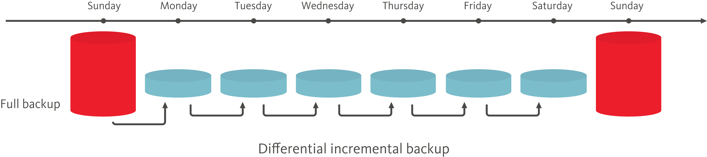
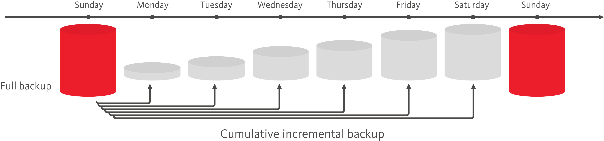
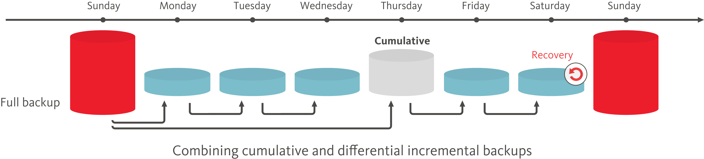

Incremental backup and restore
Incremental backup and restore enables administrators to quickly back up only modified data in the database, making backup and restore more efficient for larger data sets.
The purpose of an incremental backup is to back up only data that has changed since the previous backup. Incremental backups provide the following benefits:
- More options for backup strategies
- Greater flexibility in the restoration process
- Reduces the amount of time needed for daily backups
- Reduces the amount of disk storage needed for backups
- Reduces bandwidth usage when backing up over a network
When you need to recover data, the restoration process uses the last full backup and one or more incremental backups. You can restore data either beginning with a specified date or ending with a specified date. For more information, see the Couchbase CLI cbbackup and cbrestore commands.
In addition to full backups, Couchbase Server offers the following types of incremental backups:
- Differential incremental backup
- Cumulative incremental backup
Differential incremental backup
Differential incremental backups contain only the database changes that occurred since the last backup. Differential backups are created quickly because less data is backed up, but restorations from differential backups take longer than restorations from cumulative incremental backups.
The following figure shows an example of a differential incremental backup strategy. Every Sunday, a full backup is made. On the other days of the week, a differential incremental backup is made.
In this example, the Monday backup contains the changes made since the full backup on Sunday, the Tuesday backup contains the changes made since the Monday backup, the Wednesday backup contains the changes made since the Tuesday backup, and so on. If, for example, a restore operation is performed on Wednesday, the restoration process uses the full backup from Sunday and the differential incremental backups from Monday and Tuesday.
Cumulative incremental backup
Cumulative incremental backups contain all changes that occurred since the last full backup. Restorations from cumulative backups are faster than restorations from differential backups, but cumulative backups require a longer backup window and use more disk space than differential backups.
The following figure shows an example of a cumulative incremental backup strategy. Every Sunday, a full backup is made. On the other days of the week, a cumulative incremental backup is made.
In this example, the Monday backup contains all the changes made since the full backup on Sunday, the Tuesday backup contains all the changes made since the full backup on Sunday, the Wednesday backup contains all the changes made since the full backup on Sunday, and so on. If, for example, a restore operation is performed on Wednesday, the restoration process uses the full backup from Sunday and the cumulative incremental backup from Tuesday.
Combining incremental backup types
For greater flexibility in the restoration process, your backup strategy can include a combination of differential and cumulative incremental backups.
The following figure shows an example of a backup strategy that incorporates both differential and cumulative backups. Every Sunday, a full backup is made. For the remainder of the week, depending on the day, either a differential or cumulative incremental backup is made.
In this example, the backup schedule includes differential and cumulative incremental backups on different days. On Monday, Tuesday, Wednesday, Friday, and Saturday a differential incremental backup is made. On Thursday, a cumulative incremental backup is made. With this backup schedule, if a restore operation is performed on Saturday, the restoration process uses the full backup from Sunday, the cumulative incremental backup from Thursday, and the differential incremental backup from Friday.